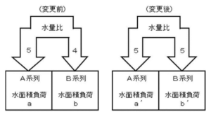

問10 次は、沈殿池の水面積負荷の変化について述べたものです。( )内にあてはまる数値として最も適切なものはどれですか。
A系列、B系列の沈殿池に5:4の水量比で下水が流入している。このときのA系列、B系列のそれぞれの水面積負荷の値a、bの比率a/bは1に等しかった。
次に、A系列、B系列に流入する下水の水量比が5:5に変わった場合、A系列、B系列のそれぞれの水面積負荷の値a ́、b ́の比率a ́/b ́は( )になる。

(1) 2/3
(2) 4/5
(3) 5/4
(4) 3/2
令和6年度 第50回 下水道技術検定 第3種 実問題。保存アーカイブより収録。